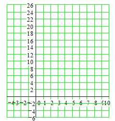

Section 4.4 Quadratic Inequalities
Activity 4.4.1. Equal, Less Than, Greater Than.
Here are three copies of the graph of \(~y=x^2-4\text{.}\)
(a)
On the first graph, we'll solve the equation \(~x^2-4=0\text{.}\) (Remember that \(~y=x^2-4\text{.}\))
Find two points on the graph with \(y=0\text{.}\) Put dots there.
What are the \(x\)-coordinates of those points?
The solutions are:
(b)
On the second graph, we'll solve the inequality \(~x^2-4 \lt 0\text{.}\)
Mark all points on the graph that have \(y \lt 0\text{.}\)
On the \(x\)-axis, mark the \(x\)-coordinates of all those points.
Write an inequality to describe the portion of the \(x\)-axis marked.
(c)
On the third graph, we'll solve the inequality \(~x^2-4 \gt 0\text{.}\)
Mark all points on the graph that have \(y \gt 0\text{.}\)
On the \(x\)-axis, mark the \(x\)-coordinates of all those points.
Write two inequalities to describe the portion of the \(x\)-axis marked.
Activity 4.4.2. Solving Quadratic Inequalities Graphically.
Here are two copies of the graph of \(~y=175-18x-x^2~\text{.}\)
(a)
Use the first graph to solve of \(~175-18x-x^2 = 0~\text{.}\)
(Hint: Notice that one of the \(x\)-intercepts is \(25\text{.}\) Think of the factored form of the equation. What is the other factor?)
(b)
Use the second graph to solve \(~175-18x-x^2 \lt 0~\text{.}\)
Mark all points on the graph that have \(y \lt 0\text{.}\)
On the \(x\)-axis, mark the \(x\)-coordinates of all those points.
Write two inequalities to describe the portion of the \(x\)-axis marked.
(c)
Solve the inequality \(~20+4x-x^2 \le 8\text{.}\)
Rewrite the inequality so that the right side is zero.
Graph the equation \(~y=12+4x-x^2\text{.}\)
\(y\)-intercept:
\(x\)-intercepts:
(Solve \(~~12+4x-x^2=0)\)
\begin{align*} \text{vertex:}~~~~~~x_v \amp = \dfrac{-b}{2a} = ~~~~~~~~~~~~~~~~\\ y_v \amp = ~~~~~~~~~~~~~~~~~ \end{align*}Use the graph to solve the inequality. Write the solution with interval notation.
Activity 4.4.3. Solving Inequalities Algebraically.
To solve a quadratic inequality,
we must answer two questions:
What are the \(x\)-intercepts of the related graph?
Does the parabola open up or down?
Remember that you may need to use extraction of roots or the quadratic formula to find the \(x\)-intercepts of a parabola.
(a)
Use the graph to solve
Show the solution on the graph. Write your answer in interval notation.
(b)
Follow the steps to solve \(~4x^2+8x-5 \le 0\text{.}\)
Find the \(x\)-intercepts of \(~y = 4x^2+8x-5\text{.}\)
Does the graph of \(~y = 4x^2+8x-5~\) open up or down? Make a rough sketch of the graph, and label the \(x\)-intercepts.
Use the graph to solve the inequality. Write your answer in interval notation.
(c)
Solve the inequality \(~x^2 \ge 18\text{.}\)
Write the inequality in standard form.
Find the \(x\)-intercepts of the corresponding graph.
Make a rough sketch of the graph. Use the graph to solve the inequality. Write your answer with interval notation.
(d)
Solve the inequality \(~10-8x+x^2 \gt 4\text{.}\)
Write the inequality in standard form.
Find the \(x\)-intercepts of the corresponding graph, (Use the quadratic formula.)
Make a rough sketch of the graph. Use the graph to solve the inequality. Write your answer with interval notation.
Subsection 4.4.1 Check Your Understanding
In Activity 1, we saw that for any value of \(x\text{,}\) the value of \(x^2-4\) is either , , or .
Suppose you have a point \(P\) with \(y\)-coordinate 8 on the graph of an equation. How do you find the \(x\)-value that produces \(y=8\) in the equation?
When you solve a quadratic inequality with a graph, how do you find the boundary points of the solution interval(s)?
Use a graph to explain why the inequality \(~x^2+1 \lt 0~\) has no solution.
Subsection 4.4.2 Wrap-Up
In this Lesson, we worked on the following skills and goals related to quadratic models:
Write compound inequalities
Use interval notation
Solve quadratic inequalities graphically
Solve quadratic inequalities algebraically